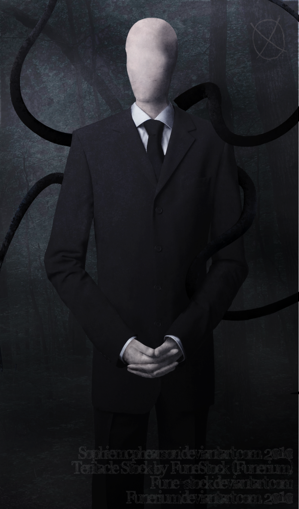
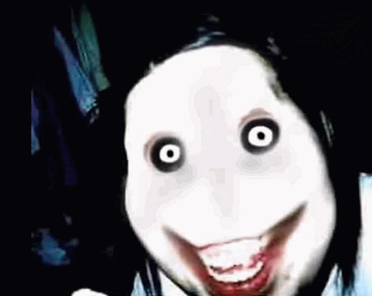
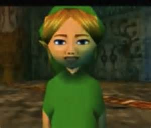
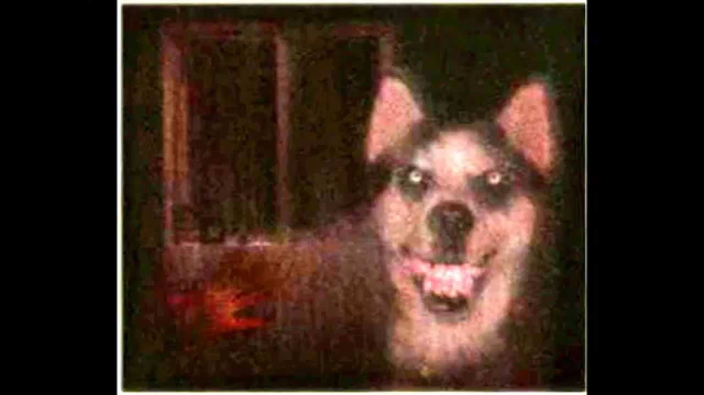
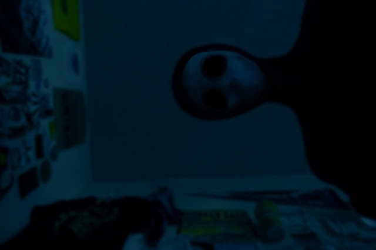
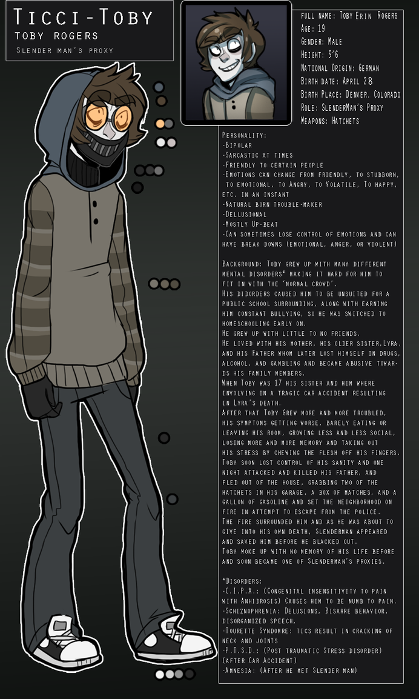

CreepyPasta
───歐美都市傳說圈、令人不安的故事或創作───
creepypasta是指網路上流傳的一些類似都市傳說、令人不安的故事，雖然有些內容早已不限於此類，可當成純粹的恐怖故事來觀賞。一般是中短篇，也有長篇作品，也會利用自行設計的圖片去表達或加強可信度。
creepy是可怕之意，而pasta則是對「黏貼」（paste）的化用，最初是copypasta（複製貼上），意指被大量複製傳播。另外，若有作者的故事則是OC(Original Character，自創角色)。
觀賞或創造的同時，請記住： 這只是創作，不是現實！！！(It's creativity, NOT reality.)
那麼，來看看較知名的CP們有誰吧。
以下有 可能令人不適

最知名的角色！還有自己的專屬遊戲(笑)
別名瘦長人、斯蘭達人、瘦叔、妖瘦人。Slender Man的原作者是Something Awful論壇的用戶Victor Surge，原名Eric Knudsen。2009年8月，Something Awful論壇舉辦一場改圖大賽，要求參賽者創作逼真的超自然恐怖圖片，而Victor Surge以Slender Man為主題參賽。而被改的照片來自澳洲：一張父親為子女拍下的生活照。當然，原圖沒有Slender Man的存在。
Eric Knudsen擁有Slender Man的著作權，而游戲發行前也都得到批準。Slender Man有張空白、沒有五官的臉孔，身著全黑西裝和領帶。會綁架孩童並帶走，最終那些兒童不是死亡便是失蹤，且死法是插上樹枝血盡而亡。另外會造成附近3c產品的失靈，以及記憶、身體、精神方面不適等。追蹤與恐嚇是他的特長——受害者無論躲到哪裡，都無法逃離追擊。
由於Slender Man並沒有一本官方的「正典」作參考，他的外貌、動機、習性及能力等屬性並不固定，往往隨作者描述而轉變。一般而言，他身材高瘦，有一對異常長的手臂；背後長出觸手，可以伸展至能夠捕獲獵物的長度。
在一些同人設定中，他在森林中有座大宅，裡面住的都是CP成員。

殺手傑夫。傑夫的臉是蒼白色，原因是被火燒傷，復原後肌肉組織增生。他晚上會爬進別人家，命令未睡的人「Go To Sleep!」（快去睡覺!)，若不聽從便會被刀砍。
這則故事是：傑夫全家搬到新的城鎮，但是他和他兄弟被小混混霸凌。在報復時意外被燒傷，復原後看見自己面目全非的臉後崩潰了。最後更劃開自己的嘴巴，殺害全家人後逃逸。
事實上，傑夫是源自於名叫凱蒂羅賓森(Katy Robinson)的女子。2008年，她在名叫4chan的討論區上發布一張自拍照，說想成為模特兒，卻遭受網路霸凌。凱蒂羅賓森最後受不了而自殺。當她姊姊透露消息後，那些霸凌者變本加厲，把凱蒂羅賓森的照片改圖：傑夫的外貌就這樣出現了。
先前曾釋出要製作電影的消息，但最後無疾而終。似乎是因為版權的問題......

顧名思義，被淹死的班。
這是從遊戲「薩爾達傳說」系列衍生出的都市傳說。有位叫Jadusable的網民聲稱自己買到二手的「薩爾達傳說───穆修拉的假面」卡匣，但在一開始遊戲內已經有一個叫「Ben」的存檔。（附註：薩爾達傳說系列主角官方預設名稱為Link（林克））
他無視那個存檔並開始新遊戲，但他發現NPC會稱他為Ben。Judusable把叫做Ben的存檔刪除，並另開叫「Link」的新檔；然而NPC還是沒有叫他「Link」。遊戲期間發生了許多的怪事，Jadusable更表示自己被「Ben」纏上。
有些故事是說，二手卡匣是一名少年(Ben)的，他很熱愛薩爾達傳說系列遊戲。但是後來被綁架撕票，挖出雙眼後扔進了湖中。因此靈魂附身在生前最愛的遊戲卡匣上。
當然，幾年後Judusable澄清一切都是他的創作。

微笑的狗。搜尋“smile.jpg”，會出現這張合成照。
全部故事簡單來講，就是一隻狗會散播他的照片，看到這張圖片後它無時無刻不出現在他們的腦海中，通常出現在睡眠期間。這可以被藥物治療。
基本上就是連鎖詛咒信吧。有時候狗的外貌會更像......臉部失去皮膚的人類，但基本上都是西伯利亞哈士奇，而且是紅毛狗。
傳播這個詞吧：）

本名Jack Nyras (傑克．奈洛斯)，作者是Azelf5000(已退圈刪文)
根據作者給的設定，Jack在某場祭祀中是一名活人祭品，但因為祭祀失敗而使他成為eldritch abomination(直譯是不祥的憎惡體)，外貌也因此改變。他的雙眼被扯出，並倒入熾熱的瀝青。Jack有著鯊魚般的尖牙，白人的膚色轉為灰色，棕髮。
他沒有特異功能，但耐力是一般人的兩倍，流血的的速度十分緩慢且呈栗色。原國籍是美國。失去了自己人類時期的記憶。

本名是Toby Erin Rogers (托比．艾倫．羅傑斯)，作者是kino(已退圈刪文)
有妥瑞氏症的17歲少年，被同學取笑是「抽搐的Toby」（Ticci-Toby）。在故事中弒父逃逸，最後被Slender man帶走，成為跟班(Proxy)
Toby的父親家暴又酗酒，所以Toby厭恨他；加上一些原因以及slender man的影響，最終殺害他人。已經失去前期的記憶。
本名是Natale Ouellette(娜塔莉．奧利特)，作者是Natalie-Rose。與Ticci Toby是官方配對(男女朋友)。
父母親不經意(？？？)的暴力與忽視、被兄長性侵、同學傳播難聽謠言與霸凌、和男友分手、家人認為有精神病送去「藥物治療」。很多事都不順遂，最終承受不了發狂殺害全家人放火逃逸。
擁有繪畫的才藝，但是因為總是畫血腥圖而被遠離。認為自己被時間困住，必須不斷輪迴在令人失望的社會中。將懷錶塞進自己的左眼，名句是Your Time Is Up (你的時間到了)
這位CP角色與作者現在還在CP圈活躍著，詳情請點這前往迪鹿 - DeluCat的網頁
歡樂傑克，作者是Snuffbomb。
一位來自家庭貧窮、父親酗酒又對妻子家暴的孤單男孩Isaac，聖誕節的早晨發現床腳出現一個五彩繽紛的木製音樂盒，裡面住的就是小丑Jack(當然是幻想的朋友)。原本個性溫暖快樂、顏色非常繽紛；但是隨著男孩成長並變成一個變態殺人犯後，長期被遺忘的Jack最後失去所有色彩，徒留悲傷和自怨自艾。
13年來的孤單最後超出Jack的容忍度，隨著男孩的罪刑與暴力逐漸侵蝕Jack的人格，最後成功離開音樂盒來到現實，將殺人當作遊戲，虐殺了Isaac。
現在，他依舊在尋找著孤單的孩子，一起「分享快樂」......
圖片及故事僅作者擁有版權，這裡只做簡易介紹無商業用途。